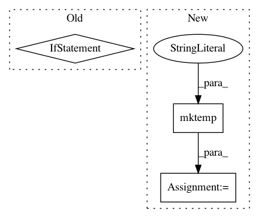

d39e177b2f24f7aed0d8bc2da8c93e0f4e632681,ants/viz/create_tiled_mosaic.py,,create_tiled_mosaic,#Any#Any#Any#Any#Any#Any#Any#Any#Any#Any#Any#,11
Before Change
libfn = utils.get_lib_fn("CreateTiledMosaic")
retval = libfn(processed_args)
if retval != 0:
raise ValueError("Non-zero exit status")
outimg = Image.open(output)
if output_is_temp:
os.remove(output)
return outimg
After Change
rgb = img.clone()
imgpath = mktemp(suffix=".nii.gz")
iio2.image_write(img, imgpath)
rgbpath = mktemp(suffix=".nii.gz")
iio2.image_write(rgb, rgbpath)
args = {
In pattern: SUPERPATTERN
Frequency: 3
Non-data size: 3
Instances
Project Name: ANTsX/ANTsPy
Commit Name: d39e177b2f24f7aed0d8bc2da8c93e0f4e632681
Time: 2017-09-28
Author: ncullen.th@dartmouth.edu
File Name: ants/viz/create_tiled_mosaic.py
Class Name:
Method Name: create_tiled_mosaic
Project Name: ANTsX/ANTsPy
Commit Name: 2923434b29a910232dfd6c3f5b5639216900592a
Time: 2019-07-16
Author: d.gomez@posteo.org
File Name: ants/utils/convert_nibabel.py
Class Name:
Method Name: to_nibabel
Project Name: nilearn/nilearn
Commit Name: 9cc888f974b9c4db34afbc669941f23ade2beb7b
Time: 2015-12-03
Author: alexandre.abadie@inria.fr
File Name: nilearn/tests/test_niimg_conversions.py
Class Name:
Method Name: test_iter_check_niimgs